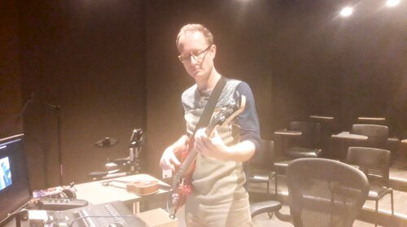
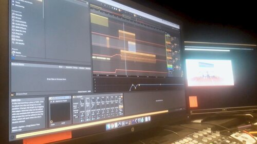

Welcome to the city of Youling. In this place, everybody is a something.
Original music by Kelly Warner
- Winner of Silver Award "Student Design" Los Angeles Animation Festival 2019
- Official Selection Chain NYC Film Festival 2019
- Official Selection 19th Kansas International Film Festival 2019
- Featured in Stop Motion Magazine
Behind the Scenes
The concept for One of a Kind was built from a simple idea: a character imitates others to fit in.
To further this theme of imitation, the story was presented very similarly to the works of Dr. Seuss.
This meant reading a lot of my childhood favorites, research I was more than happy to do. It also meant a lot of strange looks from the librarian.
Inspiration Board

As this was a character-driven film, the Protagonist was designed first with the rest of the world based around him. His design needed to appear customizable so he could easily imitate the other characters in the film. Rather than a shapeshift/morph style using a material like clay, I opted to use a more mechanical approach to the transformation by using swappable parts connected to a solid body. The toy-like look felt appropriate to the children’s book aesthetic.
The creation of Youling stemmed from this same book idea; how to transfer the pages of a book into a 3D world. The most obvious solution was the best one: Pop-up books. Referencing fold patterns from the book “The Elements of Pop-Up,” I built the world out of CG geometry in Cinema4D using these tried and true techniques. The world of Youling is sharp-edged and full of quirky shapes, which contrast with the round and simplistic character designs. And like most big cities, there’s little breathing room. It was essential that each shot of the city be packed with background details to bring the world to life. During walks, I would observe things in my local downtown and add them into Youling that same day. Unfortunately, I haven’t seen a Beezy Bub store in real life just yet.

The general work flow, in real time! (ok a little bit sped up)
The film was created through a mixed-media approach to production, using:
- Stop motion animation for the main character.
- Computer animation for backgrounds and side characters.
- Hand drawn animation for facial expressions and visual effects.
- Live action footage for opening shots and finger puppet.
To make the mix of stop motion + CG seamless, a 3D model of the Protagonist was built in Cinema4D and placed into each scene. In the final renders, the model itself is invisible but its shadow and color reflection on the CG surfaces remain. Once the stop motion footage is placed in After Effects and chroma keyed, immediately it has a sense of integration with the CG world. Hand-drawn facial expressions were then animated in Photoshop and tracked onto the stop motion model. The most difficult challenges arose when the CG and stop motion had to directly interact. For example, there was a scene where the Protagonist grows muscle arms and flexes. This involved CG arms that had to convincingly animate and track onto stop motion footage, a situation where ‘Puppet Tool’-ing the arms in After Effects gave me the most freedom to experiment without long render times.
On the audio side, all production of the film’s original songs was handled by the talented Kelly Warner. The goal was for the music to be upbeat and catchy, but also just a little bit off-kilter. This reflected Youling’s familiar, yet somewhat alien appearance. Kelly took this idea and absolutely ran with it. He brought a unique mix of synthesized and authentic instrumentation, which really breathed life into the story.


I hope One of a Kind brought you as much joy as I had making it. Hopefully more sleep, though. Thanks for stopping by!